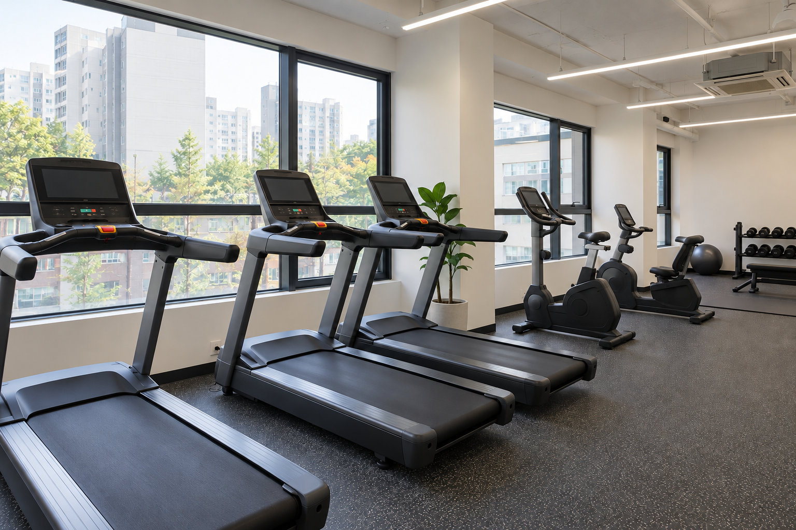
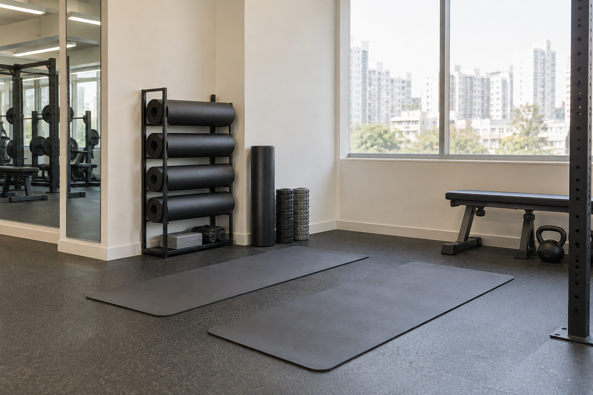

Y3GYM 본점
본점 시설 배치 예시 · 합성 임시 사진

임시·합성 이미지
웨이트 공간
덤벨과 벤치, 근력 운동 기구를 살펴볼 수 있는 공간입니다.

임시·합성 이미지
유산소 공간
러닝머신과 실내 자전거가 배치된 운동 공간입니다.

임시·합성 이미지
스트레칭 공간
운동 전후 스트레칭을 위한 매트와 소도구 공간입니다.
시각 검토용 사진과 지점 정보는 임시 자료입니다.
Y3GYM · 브랜드 공통 안내
시설과 위치, 이용 정보를 확인하고
궁금한 점은 편한 방법으로 문의하세요.

선택한 지점의 문의 안내로 이동합니다. 실제 서비스는 연결하지 않습니다.
지점 안내지점을 선택해 운동 공간을 살펴보세요.
지점 정보는 예시입니다.
본점 시설 배치 예시 · 합성 임시 사진
임시·합성 이미지
덤벨과 벤치, 근력 운동 기구를 살펴볼 수 있는 공간입니다.

임시·합성 이미지
러닝머신과 실내 자전거가 배치된 운동 공간입니다.

임시·합성 이미지
운동 전후 스트레칭을 위한 매트와 소도구 공간입니다.
예시점 시설 배치 예시 · 검수용 합성 사진을 재사용했습니다.
운영시간과 위치, 문의 방법을 확인한 뒤 방문해주세요.
이벤트가 등록되면 진행 기간과 자세한 내용을 안내합니다.